Tableau x AI
Tableau has always given people a way to see their data clearly — and that foundation now powers something far more expansive. What was once a platform for building and sharing visualizations has evolved into a truly agentic analytic experience: one that explores alongside you, surfaces the narrative behind the numbers, and proactively uncovers insight before you even know to look for it.
Built-in detection engines continuously scan for meaningful signals, while conversational analytics lets anyone engage with data in plain language and get a governed, trustworthy answer in return. This is Tableau's trusted foundation extended with genuine intelligence — deeper exploration, richer context, and insight that comes to you rather than waiting to be found.
From built-in AI to headless analytics, Tableau is the platform to deliver accurate, contextual responses, visualisation and analytics for users to see, understand and act on data. So let's take a tour today through Tableau's ever evolving platform that enables every organisation to turn trusted knowledge into action.
Agenda
| Topic | Time | Duration |
|---|---|---|
| Cloud Setup | 10:00 | 10 min |
| Tableau Knowledge | 10:10 | 30 min |
| Data Apps | 10:40 | 20 min |
| Studio Setup | 11:00 | 10 min |
| Tableau Studio | 11:10 | 30 min |
| Q&A | 11:40 | 20 min |
| CLOSE | 12:00 |
Let's get Connected — Tableau Cloud
Get your Tableau Cloud login from Hot Pass and sign in. Click Next after each step to move on.
Get your Hot Pass
Hot Pass creates your Tableau Cloud account for the workshop.
TABLEAUXAI ⤢ Click to enlarge
⤢ Click to enlarge
Accept your Tableau Cloud invite
Hot Pass emails you an invitation to the workshop site.
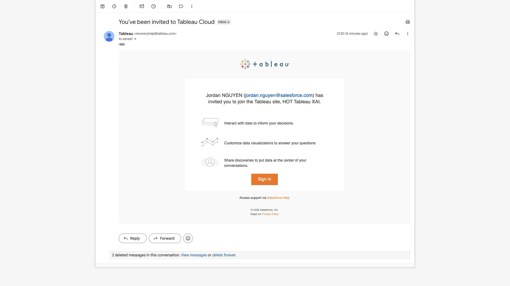
⤢ Click to enlargeOr open Tableau Cloud from Hot Pass
Your Hot Pass page links straight to the site too.
Welcome to HOT Tableau XAI
This is the Tableau Cloud site for today's hands-on.
 ⤢ Click to enlarge
⤢ Click to enlarge
Favourite the workshop project
The workshop's dashboards and data sources are all in one project.
 ⤢ Click to enlarge
⤢ Click to enlarge
Tableau Knowledge
Meet Tableau Knowledge, the enterprise knowledge management solution that unifies all of your data assets into live knowledge graphs that your team can explore and enrich. With the ability to centralize all of your business knowledge, continuously improve it, and make it accessible to any AI agent. Agents that can quickly access the context needed to respond accurately and act reliably.
Follow along with your instructor
Relevance and Accuracy — Experience why Tableau Knowledge matters
See the impact — with and without knowledge
Let's view the response from Tableau Agent with and without knowledge. We'll ask the same question of a workbook containing business preferences and one without and compare.
From the picture below click on the example workbook in Tableau Cloud WITHOUT business preferences associated to open it. Open Tableau Agent from the blue menu bar, accept the use of AI, and ask the question
"Which is our best performing product category over the last 52 weeks?"
Note the response. Quick, simple, but inaccurate!
Now click on the example WITH Business Preferences and repeat. You might be asked to validate what you mean by best (Tableau Agent doesn't assume if there is any question). Confirm with the policy aligned gross margin figure if asked.
Note the difference.
Let's see how we curate Knowledge
Navigate to Tableau Knowledge
From the Tableau Home page, click Tableau Knowledge in the left navigation bar.
Explore the Default Graph
Open the Default knowledge graph and review the assets available. Browse through Data Sources, Workbooks, Views and other content indexed in the graph.
Can you find the Retail Sales - WITH Business Preferences workbook? What additional relationships does this workbook have as opposed to WITHOUT Business Preferences?
Search for fun content
Try searching for: Music, Film, Football, Cars.
Can you find all four? Why not?
Find a workshop Data Source
Search for one of the five industry data sources created for this workshop:
- Retail Banking Performance
- Retail Sales Performance
- Telecommunications Service Performance
- Energy Generation Portfolio
- Hospital Network Performance
Click through to the associated workbook and drill into the elements — fields, relationships and lineage.
Upload a Business Preferences file
Download the Business Preferences PDF for your chosen industry, then upload it to the Default Graph.
To add: click + → Add Business Preferences → Upload Document
Check graph health
Return to the Knowledge home page and review the Health score for the Default graph. Then ask the agent:
"What do I need to do to improve the health of this knowledge graph?"
The agent will suggest adding descriptions, relationships, or enrichments to improve coverage.
Create your own Knowledge Graph (if time permits)
Create a new Knowledge Graph and use Manage Sources to bring in content.
Headless Analytics with Tableau MCP
Headless analytics means your Tableau data doesn't have to be read through a Tableau screen. Tableau MCP lets Claude, Copilot, ChatGPT, or any AI agent, query your published data sources directly. It uses the same certified fields, calculations and permissions as your dashboards, and the data is as fresh as the latest refresh.
See what Tableau MCP might look like in Claude, ChatGPT, Copilot, BLENDer
In this section you'll get to grips with Tableau MCP, using Blender, our very own AI Assistant. It works just like Claude, with some guardrails, so let's get to see just what Tableau MCP is capable of.
Log in to Blender
Blender is our own AI assistant, built on Tableau MCP. Nothing to install and no account needed.
blender.demo.tableau.comTABLEAUXAI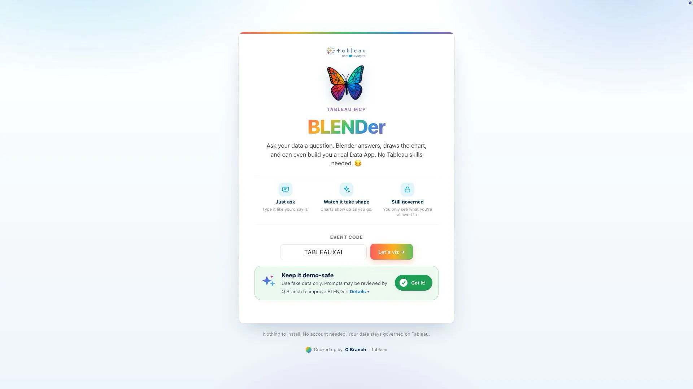
⤢ Click to enlargeYou're connected. Let's explore!
BLENDer is already connected to hot-tableauxai via Tableau MCP.
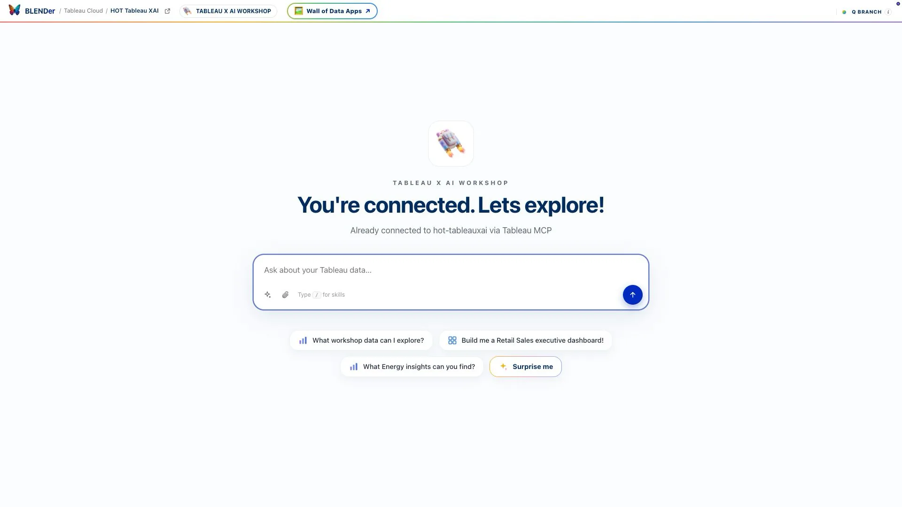
⤢ Click to enlargeLet's see what Tableau MCP can do
Tableau MCP exposes Tableau's APIs as tools that an AI client such as this can call. The LLM decides which tools to call, and the server just executes them.
To see what it's capable of let's ask Blender!
What can you do for me through the Tableau MCP? Group your tools by what they're for, then suggest three things I could try with the data sources in the Tableau x AI Workshop project.
Choose one of the suggestions, or choose your own!
Let's build a Data App
Using the Tableau MCP and the certified Retail Banking Performance data source, vibe-code a one-page dashboard as an HTML artifact: KPI tiles for applications, approval rate (approved ÷ applications) and risk-adjusted profit so far in the latest month against the same days in the month before; a weekly applications trend for the latest 13 weeks; and risk-adjusted profit by product. Use real numbers from the data source, and open with a one-line headline that says what's happening.
Then make it yours, one sentence at a time: "make the trend a bar chart", "highlight anything below the month before", "use our brand colours".
Now turn this into a Tableau data app.
Open in Tableau
Review your Data App, published and governed in Tableau Cloud. Open the link Blender gives you, or find your Data App by name on the site:
- Look at it as Tableau content. It has an owner, lives in a project and follows that project's permissions. Its Data Sources tab shows the certified data source it queries.
- Treat it like any other view: favourite it, share it, subscribe to it.
- When the data source refreshes, the app shows the new numbers the next time it opens. Nothing needs re-exporting or re-publishing.
Using the Tableau MCP and the certified Retail Sales Performance data source, vibe-code a one-page dashboard as an HTML artifact: KPI tiles for net sales, gross margin % (gross margin ÷ net sales) and units sold so far in the latest month against the same days in the month before; a weekly net sales trend for the latest 13 weeks; and gross margin % by state. Use real numbers from the data source, and open with a one-line headline that says what's happening.
Then make it yours, one sentence at a time: "make the trend a bar chart", "highlight anything below the month before", "use our brand colours".
Now turn this into a Tableau data app.
Open in Tableau
Review your Data App, published and governed in Tableau Cloud. Open the link Blender gives you, or find your Data App by name on the site:
- Look at it as Tableau content. It has an owner, lives in a project and follows that project's permissions. Its Data Sources tab shows the certified data source it queries.
- Treat it like any other view: favourite it, share it, subscribe to it.
- When the data source refreshes, the app shows the new numbers the next time it opens. Nothing needs re-exporting or re-publishing.
Using the Tableau MCP and the certified Telecommunications Service Performance data source, vibe-code a one-page dashboard as an HTML artifact: KPI tiles for net adds, complaints and average network latency so far in the latest month against the same days in the month before; weekly net adds by service for the latest 13 weeks; and complaints by region. Use real numbers from the data source, and open with a one-line headline that says what's happening.
Then make it yours, one sentence at a time: "make the trend a bar chart", "highlight anything below the month before", "use our brand colours".
Now turn this into a Tableau data app.
Open in Tableau
Review your Data App, published and governed in Tableau Cloud. Open the link Blender gives you, or find your Data App by name on the site:
- Look at it as Tableau content. It has an owner, lives in a project and follows that project's permissions. Its Data Sources tab shows the certified data source it queries.
- Treat it like any other view: favourite it, share it, subscribe to it.
- When the data source refreshes, the app shows the new numbers the next time it opens. Nothing needs re-exporting or re-publishing.
Using the Tableau MCP and the certified Energy Generation Portfolio data source, vibe-code a one-page dashboard as an HTML artifact: KPI tiles for generation (MWh), market revenue and average spot price so far in the latest month against the same days in the month before; the weekly average spot price for the latest 13 weeks; and generation by fuel source. Use real numbers from the data source, and open with a one-line headline that says what's happening.
Then make it yours, one sentence at a time: "make the trend a bar chart", "highlight anything below the month before", "use our brand colours".
Now turn this into a Tableau data app.
Open in Tableau
Review your Data App, published and governed in Tableau Cloud. Open the link Blender gives you, or find your Data App by name on the site:
- Look at it as Tableau content. It has an owner, lives in a project and follows that project's permissions. Its Data Sources tab shows the certified data source it queries.
- Treat it like any other view: favourite it, share it, subscribe to it.
- When the data source refreshes, the app shows the new numbers the next time it opens. Nothing needs re-exporting or re-publishing.
Using the Tableau MCP and the certified Hospital Network Performance data source, vibe-code a one-page dashboard as an HTML artifact: KPI tiles for admissions, staff cost and agency share of nursing hours (agency ÷ nursing hours) so far in the latest month against the same days in the month before; weekly admissions for the latest 13 weeks; and agency share by hospital. Use real numbers from the data source, and open with a one-line headline that says what's happening.
Then make it yours, one sentence at a time: "make the trend a bar chart", "highlight anything below the month before", "use our brand colours".
Now turn this into a Tableau data app.
Open in Tableau
Review your Data App, published and governed in Tableau Cloud. Open the link Blender gives you, or find your Data App by name on the site:
- Look at it as Tableau content. It has an owner, lives in a project and follows that project's permissions. Its Data Sources tab shows the certified data source it queries.
- Treat it like any other view: favourite it, share it, subscribe to it.
- When the data source refreshes, the app shows the new numbers the next time it opens. Nothing needs re-exporting or re-publishing.
Studio Setup — HOT Pass & Tableau Studio
Connect to your Hot Pass workspace and activate Tableau Studio. Click Next after each step to move on.
Part 1 — Connect to the Cloud Workspace
Get your Hot Pass
You already have your Hot Pass from Part 1, so just reopen it. For this setup you only need the Cloud Workspace. Keep your Tableau Cloud login handy: Claude uses it to sign in to Tableau.
hotpass.demo.tableau.comTABLEAUXAIyou@example.com (use your own)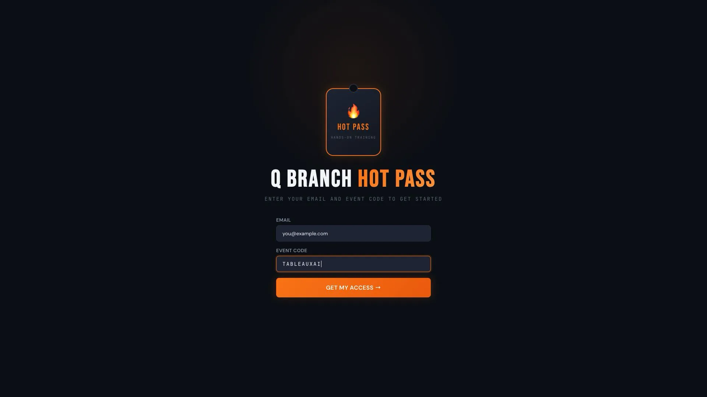
⤢ Click to enlargeOpen your Cloud Workspace
Your Hot Pass lists everything you've been given. For this setup you only need the Cloud Workspace.
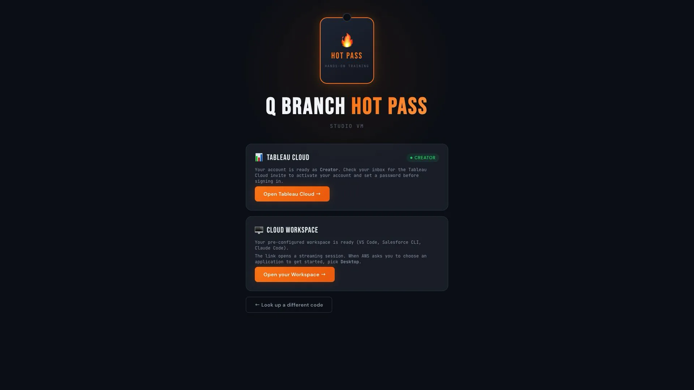
⤢ Click to enlargeLaunch the Windows desktop
The workspace opens as an Amazon WorkSpaces streaming session and asks which application to start.
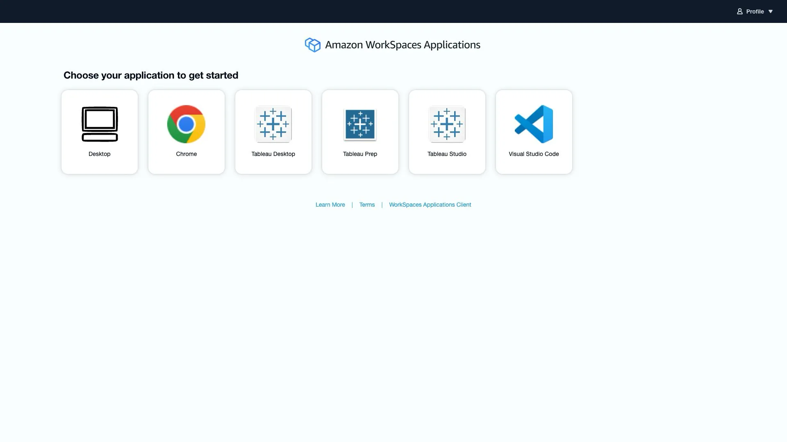
⤢ Click to enlargeYou are now logged into the VM
You should see the Windows desktop with Claude Desktop, Google Chrome and Tableau Studio shortcuts.
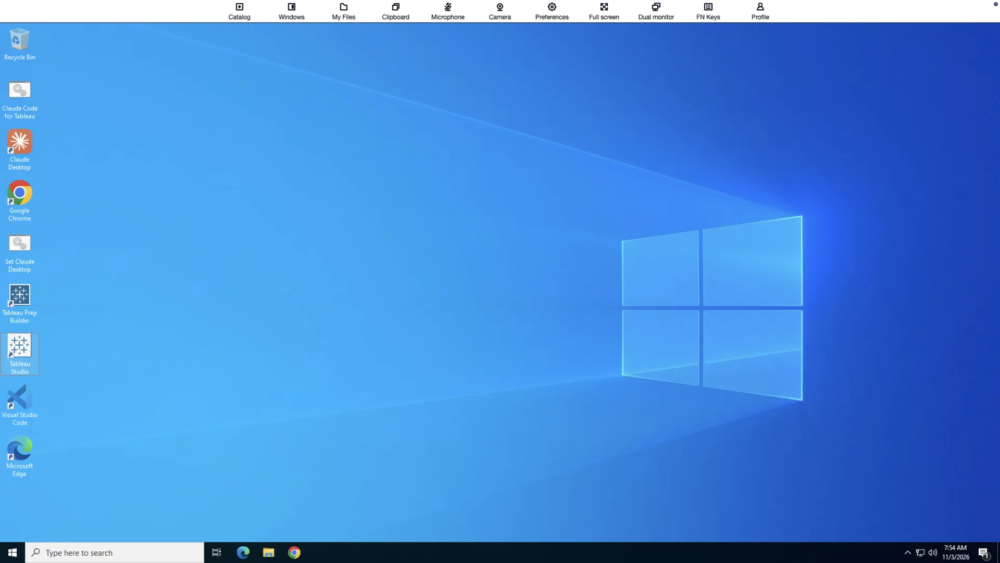
⤢ Click to enlargePart 2 — Activate Tableau Studio
Open Tableau Studio
The workspace includes a pre-release copy of Tableau Desktop, labelled Tableau Studio.
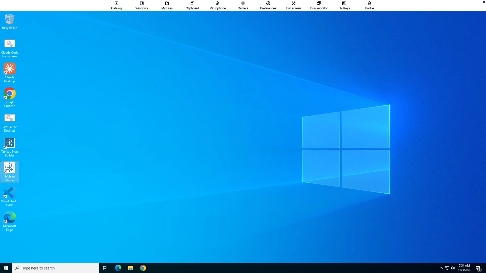
⤢ Click to enlargeActivate Tableau
The first time it opens, Tableau asks how you want to license it.
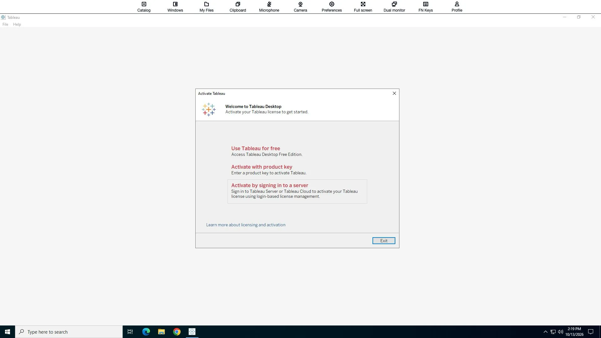
⤢ Click to enlargeSign in to Tableau Cloud
Your Tableau Cloud login activates the licence.
https://prod-uswest-c.online.tableau.com/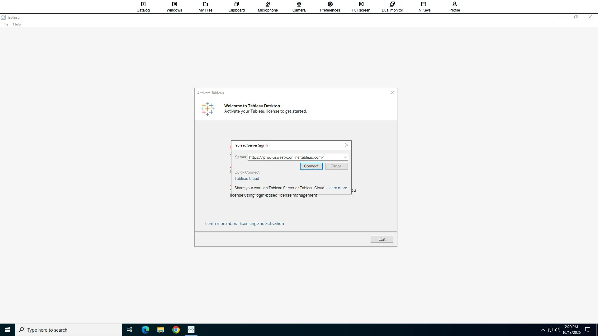
⤢ Click to enlargeEnter your username and choose the site if prompted
Tableau Cloud will prompt if you have access to more than one site
hot-tableauxai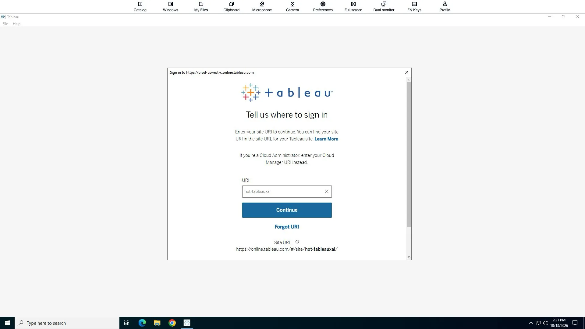
⤢ Click to enlargeActivated
Tableau is now licensed through your Tableau Cloud account.
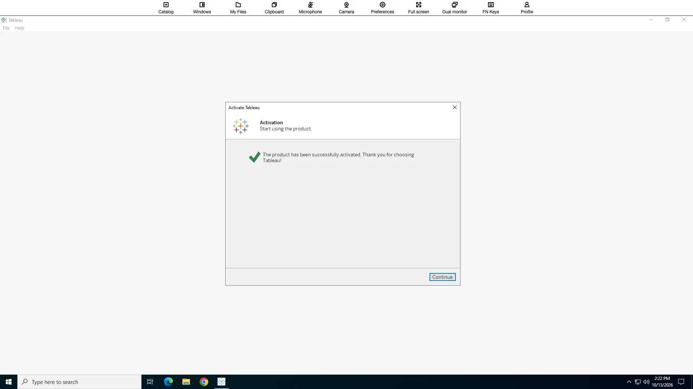
⤢ Click to enlargeOpen Tableau Agent
Tableau Agent lives in a panel on the right of the authoring window.
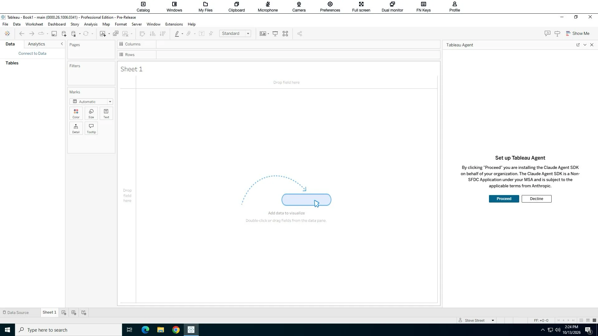
⤢ Click to enlargeInstall the Claude Agent SDK
Tableau Agent runs on the Claude Agent SDK. This happens once and may take a minute.
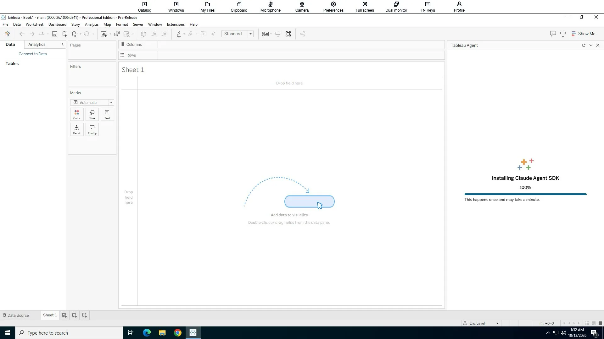
⤢ Click to enlargeRun a quick test
Check that Tableau Agent can build a viz for you.
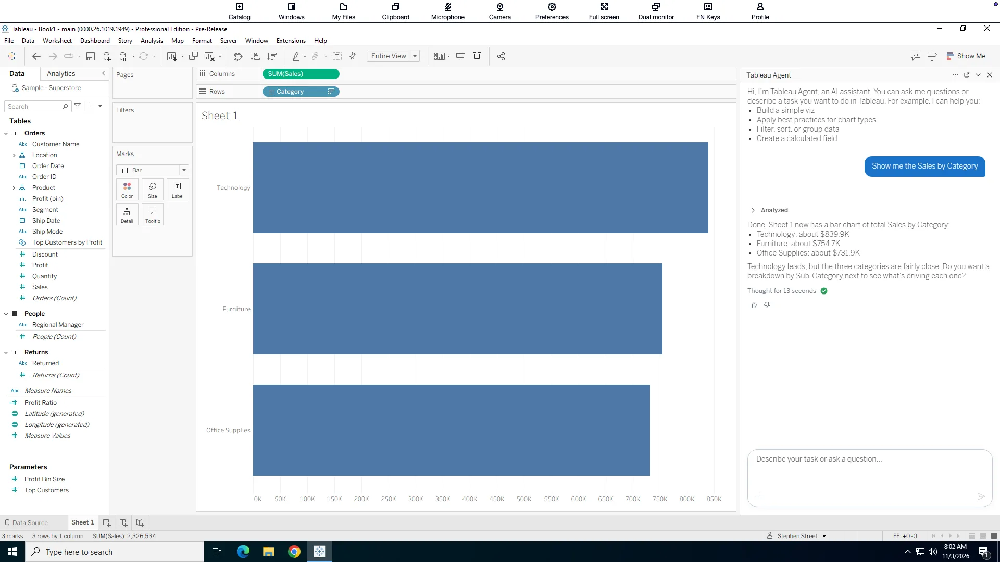
⤢ Click to enlargeTableau Studio
Tableau Studio lets you vibe-code with your data. Describe what you want in plain language, watch Tableau Agent build it, then refine it one sentence at a time. Because it works on a published data source, everything it builds is a real Tableau asset: governed, editable and built with your own permissions. Start with the guided walkthrough, which goes from insight to data app on one shared data source. Then take on the challenge with your own dataset.
Part 1 · Guided walkthrough
Data source: Homestead Hardware Sales. Work through the seven exercises in order, since each one builds on the last. Copy each prompt into Tableau Agent, then click Show expected result to check your work.
On the Start page (click on the Tableau icon top left if required), in the Connect pane on the left, click Tableau Server. You are connected to site hot-tableauxai – select Homestead Hardware Sales, and click Connect.
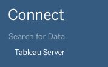
Open Tableau Agent from the speech-bubble icon top right, or from Extensions → Tableau Agent. The Agent panel opens on the right.
Before you touch a single pill, Reveal Statistical Insights cards appear at the bottom of Sheet 1. If you don't see them, ask the agent:
run insights service
- Trend Change Insight: Net Sales has a flat trend with fluctuations, starting 16 Jul 2026.
- Unusual Change: Net Sales on 10 Aug 2026 was 29.9K, below the expected range of 33.0K–65.5K given seasonal patterns.
Click Visualize Insight on the Trend Change or Unusual Change insight.
Click Create KPI on the Net Sales card.
Net sales are up, but "up" isn't a story yet. Which product family is actually carrying it?
Build a bar of Net Sales by Product Family, sorted descending.
If HVAC is the story, you want to know where. Your first instinct might be a pie chart by state. See what happens.
Show me Net Sales by Store State as an exploding pie chart.
Put Net Sales by Store State on a filled map.
Tip: If a state shows up blank, tell the agent. Geocoding can take a few seconds.
Who's actually buying? Tier is blank when someone isn't enrolled, and Customer Active Flag is false when they've lapsed. You need one calculation to answer it cleanly.
Create a calculated field named Loyalty Tier: if Tier is blank or Customer Active Flag is false, label it Non-member, otherwise use Tier.
IF ISNULL([Tier]) OR TRIM([Tier]) = '' OR NOT [Customer Active Flag] THEN "Non-member" ELSE [Tier] END, and Loyalty Tier in the Data pane.Build a bar of Net Sales by Loyalty Tier.
Break that down by Product Family. Is Non-member share concentrated anywhere, or is it flat across categories?
Store Ops will ask this same question every Monday. Instead of answering it once, turn it into something the team can check themselves.
Build KPI tiles for total Net Sales, Orders, and Units, then compose a dashboard called Sales Cockpit with the KPIs across the top and the Store State map below.
Make clicking a state filter the KPIs.
Tip: Dashboard layout can be rough. Adjust container sizes, padding and positions just like any Tableau dashboard.
One question is still open: has HVAC always led, or did another product family ever overtake it? Watch the categories change rank over time.
Vibe-code an animated bar-chart race of Net Sales by Product Family across the months, Salesforce-styled, reading the governed dashboard data.
Tip: If the tile says Loading…, click Reload on the extension tile. If nothing renders after a couple of minutes, don't troubleshoot it. Move on to the challenge.
Part 2 · The challenge
Your dataset depends on your login
As you logged into Tableau Cloud the administrator would have assigned you permissions for some fun projects. Only 1 or 2 of these will be available to you. Be lucky! Open Tableau Studio and connect to yours. Only your own dataset will open.
The challenge
Vibe-code a dashboard. Start with the prompt below, then make it yours: "make the trend a bar chart", "add a filter for region", "highlight the top 3".
Turn detective. Use Insights, or ask Studio what stands out, and then work through the insight hunt. Each dataset contains real patterns and a few genuine outliers.
Prove it. Every claim needs a number and a chart. Then present your best finding in a dashboard, or let Claude and the Tableau MCP write the data story.
Build me a music streaming dashboard: KPI tiles for streams, unique listeners, revenue and average skip rate; a monthly streams trend; the top 10 artists and tracks; and a genre-by-region heat map.
One row = one track, in one region, in one month. Skip Rate is a rate, so average it rather than summing it.
What are the three most surprising things in this data? Show me a chart for each and tell me why it matters.
Then push back: "Why?" and "Is that a real pattern or a quirk of the data?" The best insights come from the second and third question.
7 stories are hiding in this data. Turn each question into your own prompt.
Is there a genre that only shows up for part of the year?
Try monthly streams by genre. Does any genre behave differently from the rest?
Which track grew the fastest this year, and which other measure moved with it?
Compare growth rather than totals, then look at Shares per 1,000 streams.
Did any artist have one month that looks nothing like the rest?
Plot monthly streams by artist and look for a single spike.
Does where a listener lives change what they listen to?
Show each genre's share of streams by region, not total streams.
What makes listeners hit skip?
Compare average Skip Rate by Explicit, Duration (Sec) and Genre.
Who earns more for every 1,000 streams: major or independent labels?
Build a ratio: SUM(Revenue) ÷ SUM(Streams) × 1,000, by Label Type.
Is the platform growing?
Trend total streams by month, then compare streams per track by Track Age (Months).
Using the Tableau MCP, connect to the Music Streaming Charts data source and find the three most surprising insights in it. For each one, give me a headline, the key number and a chart, as a one-page HTML data story.
Paste this into Claude with the Tableau MCP connected. Claude queries your published data source directly. Does it find the same stories you did?
Build me a box office dashboard: KPI tiles for box office, budget and ROI (box office ÷ budget); box office by release year; the top 10 films; ROI by genre; and critic vs audience score as a scatter plot.
One row = one film in one region. Budget and Box Office are split by region, so SUM them per film.
What are the three most surprising things in this data? Show me a chart for each and tell me why it matters.
Then push back: "Why?" and "Is that a real pattern or a quirk of the data?"
7 stories are hiding in this data.
Which film made the most money for every dollar spent, and which lost the most?
Build ROI as SUM(Box Office) ÷ SUM(Budget), and profit as Box Office − Budget, for each film.
Do critics and audiences ever completely disagree?
Plot Critic Score against Audience Score for each film and look for the biggest gap.
Is there a best and a worst month to release a film? Is it the same for Horror?
Use the month of Release Date and compare average box office per film, then filter to Horror.
Was there a period when cinemas went quiet? Has the industry recovered?
Trend total box office by Release Year.
Are sequels better, or just bigger?
Compare average Critic Score, Audience Score and Box Office per film for Sequel vs New.
Does the age rating change how much a film earns?
Compare median ROI per film by Rating.
Which genre wins the awards, and does it make money?
Compare Awards Nominations and median ROI by Genre.
Using the Tableau MCP, connect to the Film Box Office data source and find the three most surprising insights in it. For each one, give me a headline, the key number and a chart, as a one-page HTML data story.
Paste this into Claude with the Tableau MCP connected.
Build me a football league dashboard: a league table (points, wins, goal difference) filtered by league and season; wage bill vs points as a scatter plot; home vs away points per match; and goals per match by league.
One row = one team's view of one match, so there are two rows per match.
What are the three most surprising things in this data? Show me a chart for each and tell me why it matters.
Then push back: "Why?" and "Is that a real pattern or a quirk of the data?"
6 stories are hiding in this data.
Does money buy titles? How often does the biggest spender win the league?
Build a league table (SUM(Points) by Team and Season), then compare each champion's wage bill with the rest.
Is there a champion that money can't explain?
Plot wage bill against points for every champion, or rank champions by wage bill.
Does any club dominate its league for years?
Count league titles by team for each league.
How much is home advantage worth, and was there a season it almost vanished?
Compare average Points per match for Home vs Away by Season, then bring in Attendance.
What does a red card cost a team?
Compare average Points, xG and xG Against for matches with and without a red card.
Which league is the most entertaining to watch?
Compare average Goals For per team per match by League.
Using the Tableau MCP, connect to the Football League Matches data source and find the three most surprising insights in it. For each one, give me a headline, the key number and a chart, as a one-page HTML data story.
Paste this into Claude with the Tableau MCP connected.
Build me a used car market dashboard: KPI tiles for listings, median price and median days on market; value retained by age for each fuel type; average price by make; price vs odometer as a scatter plot; and listings by state.
One row = one listing. Value Retained % = Listing Price ÷ Original MSRP, so average it and never sum it.
What are the three most surprising things in this data? Show me a chart for each and tell me why it matters.
Then push back: "Why?" and "Is that a real pattern or a quirk of the data?"
6 stories are hiding in this data.
Which kind of car loses value the fastest?
Plot average Value Retained % by Age (Years), with one line per Fuel Type.
Is any car worth more today than when it was new?
Filter to Value Retained % above 100%, then look at Make, Model and Year.
Does any model have a model year that's out of step with the rest?
Plot Value Retained % by Year with one line per model, and look for a dip.
Does colour matter when you sell?
Compare average Value Retained % by Colour.
Which cars sell fastest, and which sit on the lot?
Compare median Days on Market by Make and by Fuel Type.
Which brand holds its value best?
Rank makes by median Value Retained %. Exclude pre-1990 classics so the comparison is fair.
Using the Tableau MCP, connect to the Used Car Market data source and find the three most surprising insights in it. For each one, give me a headline, the key number and a chart, as a one-page HTML data story.
Paste this into Claude with the Tableau MCP connected.
Q&A
Open floor for questions — ask us anything about Tableau AI, Knowledge, Studio, Data Apps, or your own use cases.
Thank You!
Thank you for joining us today! We hope you enjoyed exploring Tableau's AI-powered analytics platform. If you have any questions or want to continue the conversation, don't hesitate to reach out.